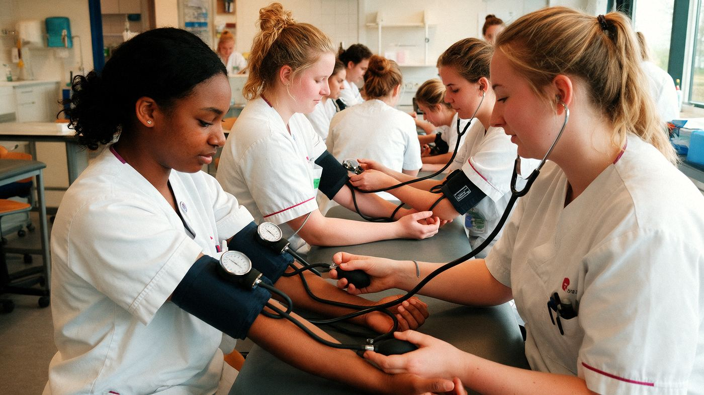

Home › Opleidingen › Verpleging, geneeskunde & medisch › Apothekersassistent

Wat is Apothekersassistent?
Apothekersassistent is een opleiding op mbo (niveau 4) in de groep Verpleging, geneeskunde & medisch. Zieke mensen verzorgen en behandelen: verpleging, medisch, tandheelkunde, farmacie.
Wat kun je ermee?
- Verpleegkundige
- Arts, tandarts of apotheker (wo)
- Verloskundige
- Medisch of laboratoriumtechnicus
Wat heb je ervoor nodig?
- Voor mbo: een vmbo-diploma; voor niveau 4 meestal vmbo-tl/gl of kader. Zonder diploma kan Entree (niveau 1)
- Meestal Natuur & Gezondheid (N&G) of N&T. Geneeskunde, tandheelkunde en verloskunde hebben vaak loting of selectie.
- Het helpt als je: Medeleven en verantwoordelijkheid, Tegen stress en onregelmatige uren kunnen, Netjes en precies
Selectie of toelatingsexamen?
Bij onder meer geneeskunde, tandheelkunde en verloskunde selectie of loting. Kijk bij de opleiding zelf wat er precies gevraagd wordt.
Hoe lang duurt het?
mbo: 1 tot 4 jaar, afhankelijk van het niveau. Je kunt het volgen als bbl (werken en één dag naar school) en bol (vooral leren, met stages).
Bij bol ga je vooral naar school en loop je stage. Bij bbl werk je bij een leerbedrijf en ga je één dag per week naar school; je verdient dan al salaris. Het diploma is hetzelfde. Meer over bol en bbl
Waar kun je Apothekersassistent studeren?
Bij 29 scholen, onder andere in 'S-Gravenhage, 'S-Hertogenbosch, Alkmaar, Amersfoort, Amsterdam, Arnhem, Deventer, Eindhoven, Goes, Groningen, Haarlem en Heerlen:
- Albeda Zorgcollege
- Alfa-college voor Beroepsopleidingen Hoogeveen
- Capabel Onderwijs
- Curio U
- Curio zorg en welzijn
- Deltion College - Welzijn & Gezondheid
- Firda Leeuwarden Zuid
- Gezondheidszorg & Welzijn
- Koning Willem I College
- MBO Amersfoort
- MBO Amersfoort School voor Gezondheidszorg
- NCVB Bedrijfsopleidingen
- Nova College Campus Haarlem
- ROC Gilde Opleidingen
- ROC Midden Nederland - Gezondheidszorg College (Utrecht)
- ROC Mondriaan Gezondheidszorg Den Haag
- ROC Nijmegen directie Zorg en Welzijn
- ROC van Amsterdam - MBO College West
- ROC van Flevoland - MBO College Lelystad
- ROC van Twente, College voor Mens & Gezondheid
- Rijn IJssel Zorg & Welzijn
- Scalda - Zorg, Welzijn en Uiterlijke Verzorging
- School voor Zorg, Welzijn & Sport
- Summa Zorg
- Talland College - Gezondheidszorg
- VISTA college
- Zadkine Gezondheid & Welzijn College
- Zorg & Welzijn
- mboRijnland Mbo-college Welzijn en Zorg
Verwante opleidingen
- Verzorgende IG
- Assistent dienstverlening
- Mbo-Verpleegkundige
- Verzorgende-IG
- Mbo- Verpleegkunde
- Doktersassistent
- Medewerker dierverzorging
- Tandartsassistent
- Zelfstandig medewerker dierverzorging
- Bedrijfsleider dierverzorging
Past Apothekersassistent bij jou? In de app zie je hoe ver elke school van je huis is, wanneer de open dagen zijn en wat je Plan B is. Je kunt hem ook op je lijst zetten.
Bekijk in de appDoe de Padvinder